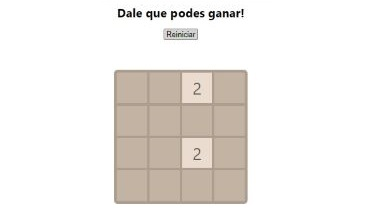

Welcome! This is my personal portfolio.
Get to know me and check out some of my work.
I was born in Tandil, Argentina in 1996. At the age of 12 I traveled with my family to the city of San Diego, CA
where we spent the next 3 months. I started attending La Joya middle School and there I got to live my first international experience.
It was a hard time, probably as hard as it would be for any 12 year old student who gets taken out of its comfort zone and
dragged to a completely new life.
After my experience in San Diego I went back to Argentina and started
my secondary studies. Once the school day finished, I used to spend entire afternoons playing golf.
Since I was really young I had a great fascination for sports. Even today I practice and watch many different sports,
but golf has been the sport that has impacted my life the most as it gave me friends and a lot of good memories.
Around the age of 15, me and a couple of frineds started getting involved
in social activities. It was a really special time because we got to learn how even small things can
make an impact. With the sponsorship of our local Rotary club we founded Interact Tandil Oeste, a social acitvity group for young
people. We took on a lot of projects covering different topics. Even today, long after we left, the group is still active and helping communities.
On my last year of high school I decided I needed a change and became an exchange student
on Rotary's youth exchange program. I got selected to spend my entire last year of high school in the city of Boise ID.
Through my entire year, I got to live incredible experiences and met a lot of interesting people. That year I spent there was truly incredible as
I bacame part of their community the community. One of my biggest accomplishments thourght my time in Boise was to play varsity golf and winning the district championship, while graduating
at the end of the year from a foreign high school as any normal US student
It was not easy deciding what to do with my future. I had the option of staying in the United States to play golf in college,
but at the end I made up my mind and I came back to Argentina and decided I wanted to study Economics at Universidad de San Andrés.
After two years of college, I took on a different adventure by going to study for a semester abroad to Universität St.Gallen in Switzerland.
Studying there I started learning about Bitcoin, cryptocurrencies and blockchain.
In 2019, I graduated from collage and started working as a consultant at Managment Solutions.
At that time I started learning SQL and R as ways of manipulating data. After a couple of months I took a position as a Data Scientist at Santander Tecnologia
where I specialized in developing front end solutions as a way of exploiting data and metrics.
Since that time I started learning different programming languages as JavaScript and Solidity and finally decided to start a carrer at Educacion IT
to become a blockchain developer.
React
.png)
Recipe finder
Try finding your favourite dish!

2048 (Desk version)
How far can you get?
.png)
Shopping list
Never forget your groseries again!
Get In Touch
Im always looking for new challenges, specially in the Blockchain industry. So if you like my enthusiasm and my way of solving problems dont doubt contacting me!